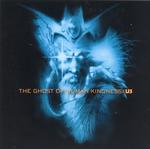

| Artist: | Us |
| Title: | The Ghost Of Human Kindness |
| Label: | Independent |
| Length(s): | 68 minutes |
| Year(s) of release: | 2004 |
| Month of review: | [09/2005] |
| 1) | Full Circle | 19.28 |
| 2) | Domes | 14.22 |
| 3) | Grand Canyon | 8.31 |
| 4) | The Dream | 7.58 |
| 5) | The Ghost Of Human Kindness | 17.18 |
Domes flies of with heavy synths and guitars, kicking off right away. There is something about this that fits in nicely with And Then There Were Three era Genesis. The lull after this leads into the once more guitar-vocal section. The changes in acoustically directed and more electr(on)ic sections comes faster, without resulting in speeding up the track. The instrumental section halfway the track does pick up some speed and builds momentum, with some nice guitar ideas, but the danger of spreading those too thin lures constantly.
Grand Canyon comes even closer to a singer songwriter track than its predecessors. Unfortunately Christiaans suddenly develops an off key whine, especially when he sings the title of the song. Once again the track lacks heavily in tempo, without compensation. The instrumental section adds some electrics and with that some spice.
The Dream starts off with a decent enough speed. Christiaans' vocals waver a bit during this bit. The middle section with electric guitars and synths moves into meanderville at high speed, though. The final instrumental guitar drum duel has a bit of bite and features a nice lingering melody. Finally the music generates an enticing feel.
The title track starts with yet another slow intro. Near the three minute mark Christiaans starts on his vocals with some nice diction initially. from this we move into a synth led section later adding drums and guitars building up momentum. For the second time the music comes alive. From the climax of this section we move into a longish instrumental section that now Is able to keep the attention for quite some time. The vocal section following has Christiaans use his voice with diction again. The closing vocal section does contain a decent enough balance and speed, the vocals lagging behind, though. Although it still features some poor sections, this track is by far the best on the album. Hadn't this been a review disc, though, I'm not sure I would have made it this far into the album.
Based on the band's past I would have expected them to be able to create the sort of music as heard in the final track, but more consistently than this. Now it shows a band that still needs a lot of work to bring their ideas into compelling music.
www.the-music-of-us.com